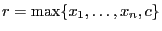

Next: Model.addGenConstrMin() Up: Model Previous: Model.addGenConstrXxx()
Add a new general constraint of type GRB.GENCONSTR_MAX to a model.
A MAX constraint
 states that the resultant
variable  should be equal to the maximum of the operand variables
should be equal to the maximum of the operand variables
 and the constant
and the constant  .
.
You can also add a MAX constraint using the max_ function.
Arguments:
resvar (Var): The variable whose value will be equal to the max of the other variables.
vars (list of Var): The variables over which the max will be taken. Note that this list may also contain constants (type int, long, or float).
constant (float, optional): An additional operand that allows you to include a constant among the arguments of the max operation.
name (string, optional): Name for the new general constraint.
Note that name will be stored as an ASCII string. Thus, a name
like 'A B' will produce an error, because
'
B' will produce an error, because
' ' can not be represented as an ASCII character. Note
also that names that contain spaces are strongly discouraged,
because they can't be written to LP format files.
' can not be represented as an ASCII character. Note
also that names that contain spaces are strongly discouraged,
because they can't be written to LP format files.
Example usage:
# x5 = max(x1, x3, x4, 2.0) model.addGenConstrMax(x5, [x1, x3, x4], 2.0, "maxconstr") # alternative form model.addGenConstrMax(x5, [x1, x3, x4, 2.0], name="maxconstr") # overloaded forms model.addConstr(x5 == max_([x1, x3, x4, 2.0]), name="maxconstr") model.addConstr(x5 == max_(x1, x3, x4, 2.0), name="maxconstr")